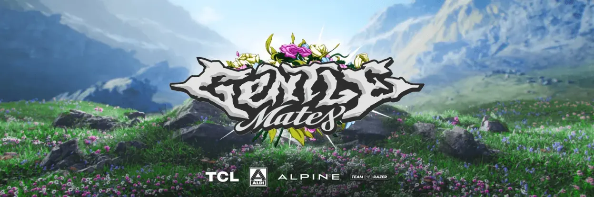
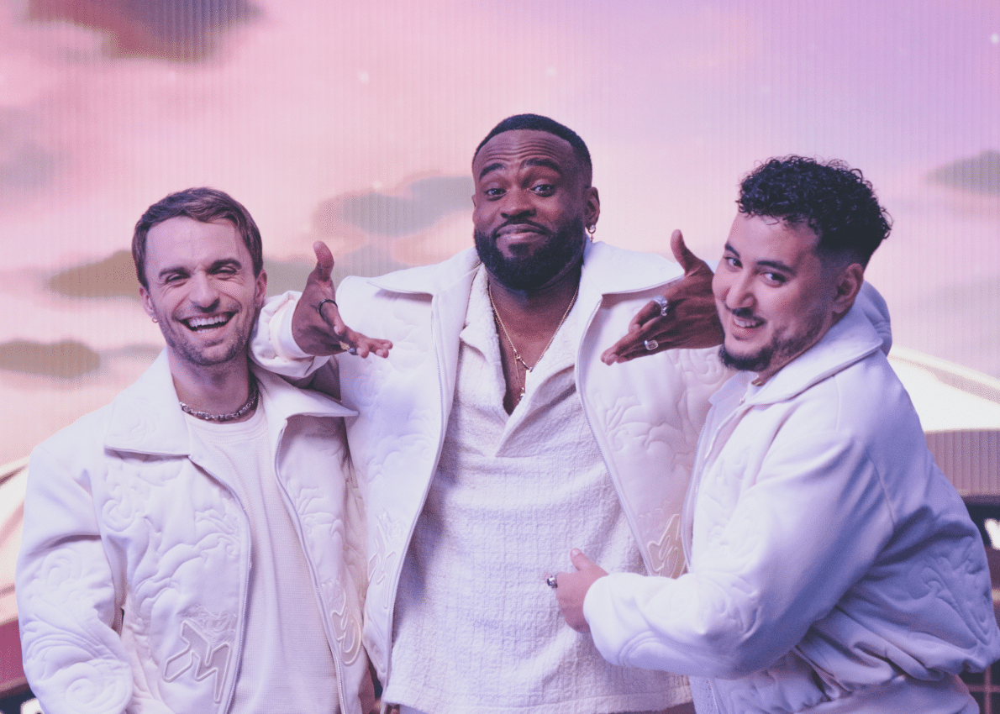
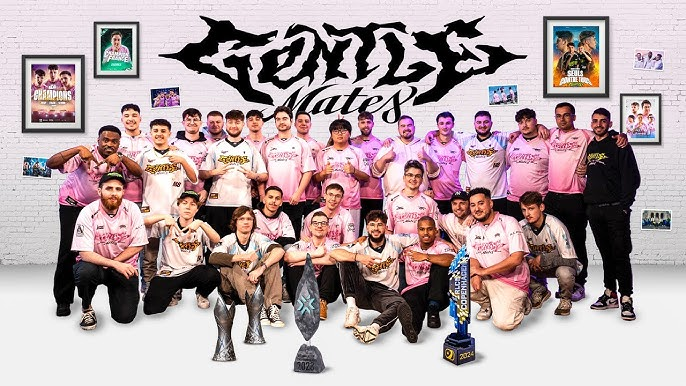
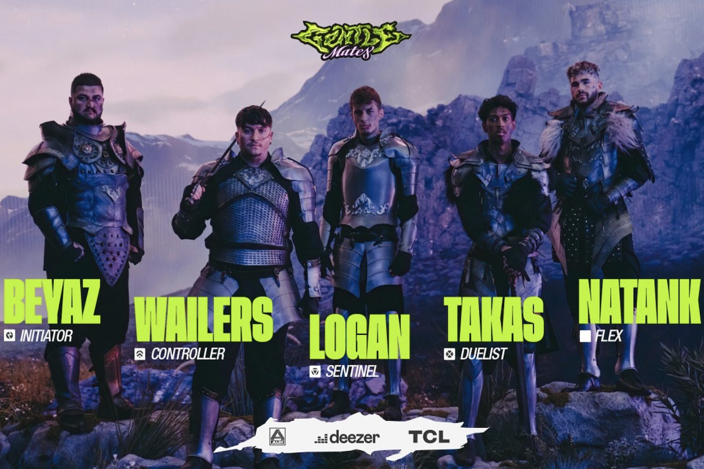
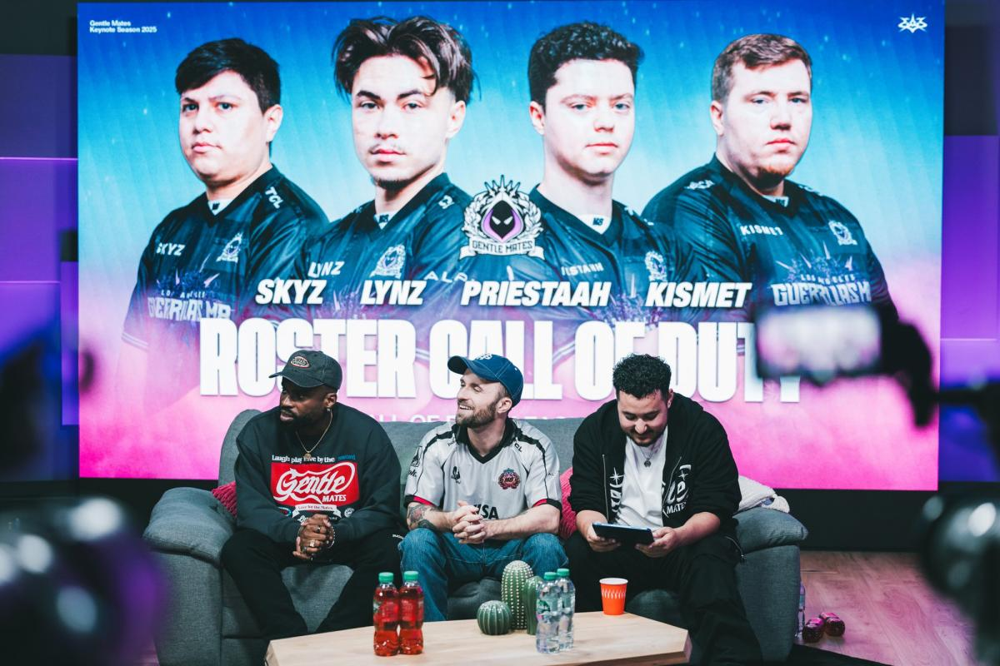

Présentation de Gentle Mates
Gentle Mates (souvent abrégé M8) est une structure e-sport française de premier plan,
co-fondée par les figures emblématiques que sont Squeezie, Gotaga et Brawks. Depuis son lancement, j'ai
suivi avec enthousiasme l'ascension de cette équipe qui incarne des valeurs d'excellence, de passion et
une forte connexion avec sa communauté. Leur ambition est de briller sur la scène nationale et
internationale à travers différentes disciplines compétitives.
Galerie M8




Les Jeux Phares
Gentle Mates s'est rapidement imposée sur plusieurs jeux majeurs de la scène e-sportive :
- Valorant : Avec une équipe performante évoluant au plus haut niveau, notamment en
VCT EMEA.
- Rocket League : Une présence notable avec des joueurs talentueux.
- Fortnite : Participation active aux compétitions majeures.
- Call of Duty : Une équipe compétitive qui vise les sommets.
Les Autres jeux
En plus des jeux phares, Gentle Mates explore d'autres titres populaires :
- Teamfight Tactics : Mise en place d’un roster compétitif avec participation à
plusieurs tournois sur ce jeu d’auto-battler.
- Age of Empires IV : Formation d’une équipe lors d’événements centrés sur ce jeu de
stratégie en temps réel.
- Warzone 2 : Développement d’un roster actif engagé dans diverses compétitions de la
scène Battle Royale.
Ce qui définit Gentle Mates
- Fondateurs Iconiques : Portée par des personnalités influentes et passionnées de
l'e-sport.
- Communauté Engagée : Un soutien massif et fervent de la part des fans (#M8WIN).
- Ambition et Performance : La volonté de concourir au plus haut niveau et de
remporter des titres.
- Proximité et Transparence : Une communication régulière et authentique avec leur
public.
Mon Soutien et Pourquoi
En tant que passionné d'e-sport et admirateur du parcours de ses fondateurs (surtout Gotaga), soutenir
Gentle Mates dès
son lancement m'a paru naturel. Je suis particulièrement sensible à :
- L'énergie communicative : L'enthousiasme et la passion qui se dégagent de chaque
annonce et compétition.
- Les valeurs portées : Le respect, le travail d'équipe et la recherche de
l'excellence.
- La fierté française : Voir une structure française avec de telles ambitions et un
tel impact sur la scène internationale est une grande source de motivation.
- Le développement des talents : L'opportunité offerte aux joueurs de s'épanouir dans
un environnement professionnel et stimulant.